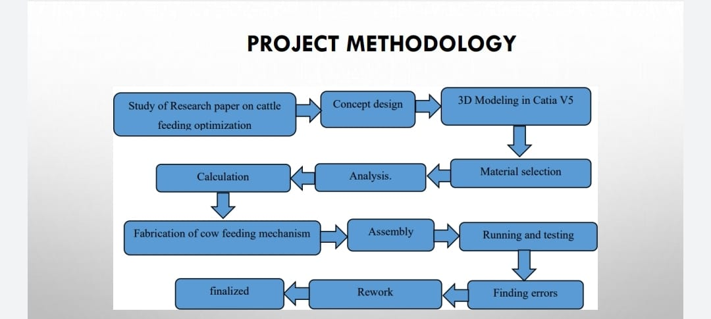

Introduction
In certain regions of rural area, cow feeding is done conventionally by hand and periodic time stamps by human interference. This process is really hectic and time consuming, the cattle need to be fed. It is a simple statement, but one that resonates with every cattle producer. To make this necessary task easier for farmers, the concept of automatic cattle feeding system came into existence. Automatic Cattle Feeding System is a robotic feeding system which consists of a battery-operated robotic vehicle that is capable of feeding an equal amount of feed. The feed is manually loaded in the feeder and it follows the feed fence through a pre-determined route until it reaches the feeding fence at a pre-determined distance where it places the feed through a moving bogie. To ensure the precise, timely and adequate feeding of cattle of each group, this project is applicable in an agricultural country like Nepal where the lack of manpower in cattle farming has an adverse effect on dairy production. The main objective is to design an automatic cattle feeding system that moves around the fence to distribute the feed uniformly. With the application of the rail following robot, remarkable changes can be brought to this field. In this we are using Arduino circuit for controlling the motor for feeding the cattle After certain time space. With the application of Automatic Cattle Feeding system uniformity in feed distribution can be maintained.
Schematic Diagram

BEST HEALTHY FEED FOR BEEF CATTLE:
- Grain Supplement: Grain can get cattle growing quickly and can help cattle get fat.
- Hay:Hay can provide every important nutrient for cattle, but it has to be
picked at the height of its nutrient richness — that is, before it becomes too dry. - Pasture and Forage.
- Concentrates.
How much consumables do we have to feed per day
A lactating cow will consume between 18 and 25 kg of dietary dry matter each day, depending on how much milk she is currently producing. Cows have access to feed and water at all times, except during milking (2 or 3 times per day)How do farmers feed the cow
Commercial gains farmers feed to cows are often composed of corn, oats, barley or a mixture. While barley is the least expensive, oats are often the preferred grains because they are easily digested by cattle due to the high fiber content.
How many times a day should you feed a cow?
The study also found that steers fed three times per day consumed more feed and had greater
daily gains and heavier slaughter and carcass weights than steers fed once or twice daily.
Feed-to-gain, dressing percentage and USDA quality and yield grades were not affected by
feeding frequency. So according so survey conducted the cattle should feed 3 times a day
and water should be given 4 to 5 times to stay fully hydrated and give most possible product like milk.
Aim & Objective
AIM:
The aim of this project is to design & develop automatic cow feeding machine that saves time & cost by carrying out a variety of task which includes feeding the feed in accurate quantity as well as water. Distribute it onto the feeding table at the right time.
OBJECTIVE:
• The objective of this project is to minimize the human efforts.
• To feed the cattle with periodic time steps in a day.
• To neglect the conventional time-consuming process.
Scope:
• The system can be used for goats, pigs, chickens by adjusting the programming.
• Use of solar power can be implied instead of electricity.
• Use of sprinkle for washing of cattle.
• Use of cutter for cutting grass.
Methodology
Steps
- We started the work of this project with literature survey. We gathered many research papers which are relevant to this topic. After going through these papers, we learned about Automatic cow feeding
- we can decide a conceptual things step by step that can be used to decide a conceptualdesign.
- With the help of a market survey we can selected our standard as well as required parts for particular operation
- After deciding the components, the 3 D Model and drafting will be done with the help of CATIA software.
- After designing part the analysis was done with the help of ANSYS software to find out that our design is actually safe or not for Fabrication
- Calculatory part can be done by with the help of a references like books and research papers.
- - The components will be manufactured and then assembled together.
- The setup after manufacturing can be run and tested by a trial and error, after that the particular kind of a error can be removed and tested.
- The experimental observations will be taken; calculations will be done and then the result will be concluded.
Arduino UNO Micro-controller Program for ACF:
int flag = 0;
void setup (){
Serial.begin (9600); pinMode (4, OUTPUT); pinMode (5, OUTPUT);
digitalWrite (4, HIGH);
digitalWrite (5, HIGH);
delay (3600); }
void loop () {
if ( flag == 0) { digitalWrite (4, LOW); // ON MORINING
delay (1500);
digitalWrite(4, HIGH); // OFF
delay (7600);
digitalWrite (5, LOW); // ON PUMP
delay (6000);
digitalWrite (5,HIGH); // OFF
delay (1000);
digitalWrite (4,HIGH); // AFTRNOON
digitalWrite (5,HIGH);
delay (6000);
digitalWrite (4,LOW); //ON AFTERNOON
delay (500);
digitalWrite(4,HIGH); //OFF
delay(7600);
flag = 1;
digitalWrite(5,LOW); //ON PUMP
delay(6000);
digitalWrite(5,HIGH); //OFF
delay(1000);
digitalWrite(4,HIGH); //AFTERNOON
digitalWrite(5,HIGH);
delay(6000);
digitalWrite(4,LOW); //ON AFTERNOON
delay (500);
digitalWrite(4,HIGH); //OFF
delay(7600);
flag =1;
digitalWrite(5,LOW); //ON PUMP
delay(6000);
digitalWrite(5,HIGH); //OFF
delay(1000);
}
}